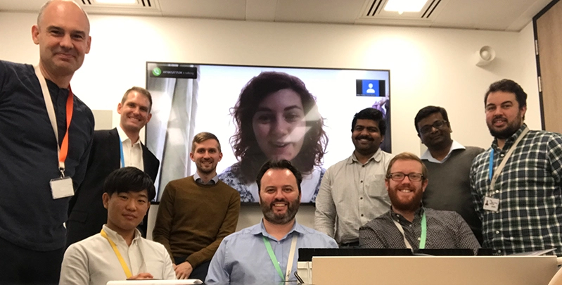
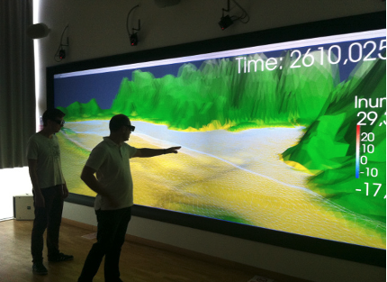
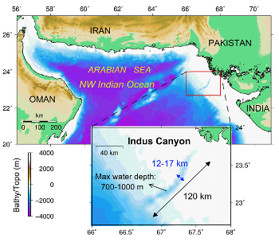
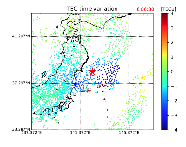
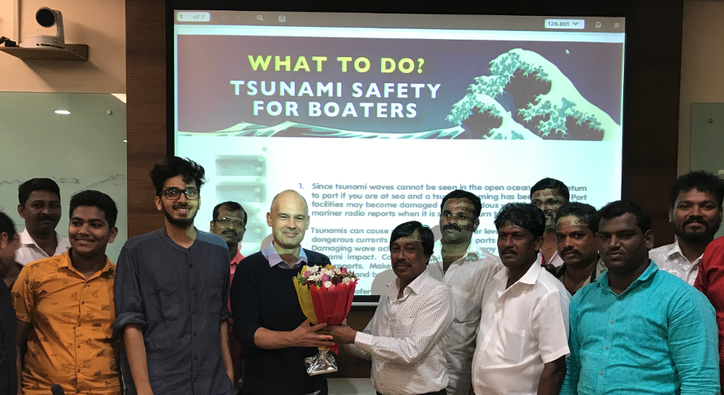

Breaking the Waves
Issue 1
Professor Serge Guillas is leading a team seeking better ways to predict potentially disastrous tsunamis using high-performance computing…
Recently, major tsunamis in Indonesia and Japan have caused the insurance industry and civil authorities around the world to demand better models to assess tsunami risk. In particular, the economic impacts of the tsunamis include losses of livelihoods and incomes, loss of boats and gear among fishing communities, and increased levels of poverty in the aftermath of the event.
To model tsunami waves and currents, and their uncertainties, UCL’s research group of PhD students, postdocs, and research software engineers is making use of high-performance computing (HPC).
Prof Guillas is leading several projects to improve both long-term risk assessments and short-term warnings using HPC and modern statistical methods:
UQM3: ‘Uncertainty Quantification Of Multi-scale And Multi-physics Computer Models: Applications To Hazard And Climate’ in collaboration with the Universities of Oxford, Warwick and Exeter. Running from 01/10/2018 – 30/09/2020.
This project aims to answer some of the questions around natural events, such as tsunamis, earthquakes or climate changes, by quantifying the uncertainties in complex simulators.
Uncertainty Quantification uses surrogate models that allow the uncertainties to be modelled more efficiently. However, designing a workflow that integrates models as diverse as natural phenomena is a challenge.
When applied to natural events, it’s hoped that Uncertainty Quantification will help us carry out risk assessments around the impact of earthquakes or tsunamis, for example. This will help us understand how to build resilient infrastructure and protect populations.
UQM3’s research is carried out at the Alan Turing Institute - the national institute for data science and artificial intelligence - with headquarters at the British Library. It’s part of the Data-centric Engineering (DCE) programme of the Turing.
RADDISH: ‘Real-Time Advanced Data Assimilation for Digital Simulation of Numerical Twins on HPC’, funded by the Strategic Priorities Fund, EPSRC AI for Science and Government. Running from 01/08/2019 – 31/07/2020.
Based at the Turing Institute, RADDISH is implementing agent-based models to facilitate tsunami warnings and evacuation modelling.
Using high performance computers, a digital twin of a tsunami event can track actions in real-time using live data. We can accurately monitor how an event would unfold and identify areas where changes can be made to procedure to improve the safety of those involved.

VETII: ‘Vessels Evacuation from Tsunamis in India and Indonesia’, funded by the Grand Challenge Research Fund (GCRF). Running from 01/01/2020 – 30/06/2020.
VETII uses accurate agent-based models of vessels in ports around India and Indonesia and applies probabilistic tsunami current hazard assessments to simulated models.
We can apply different scenarios to these models to see how quickly people can evacuate when a tsunami occurs, ultimately creating the most efficient layout for boats in different ports.


FITTER: ‘Future Indonesian Tsunamis: Towards End-to-end Risk Quantification’ funded by the Lloyd’s Tercentenary Research Foundation, the Lighthill Risk Network and the Lloyd’s Register Foundation. Running from 2019 – 2022.
FITTER will focus on the risk of a tsunami hitting areas of important infrastructure. We will produce stochastic tsunami hazard footprints, new vulnerability functions for the resilience of infrastructure such as ports, and for the livelihood of populations. This open model will be of use to both Government and the insurance industry, and enable modern disaster risk financing for Indonesia.
‘Uncertainty Quantification for Tsunamis’ on the Cambridge Service for Data Driven Discovery (CSD3) facility, EPSRC tier 2 HPC. Running from 01/10/2018 – 30/09/2022.
In this project, we’re assessing tsunami simulations on the UK’s largest graphical processing unit (GPU) cluster. This means we can use Uncertainty Quantification to predict the complex nature of tsunamis with more accuracy and detail.
Early warnings using satellites Running from 2019 – 2023.
In collaboration with the University of Shizuoka (Japan), and with UCL PhD student Ryuichi Kanai funded by the Japan Student Services Organization, we aim to collect signals within minutes of the tsunami from the ionosphere through GPS satellites.
AGITHAR Prof Guillas is also UK representative and Chair of the Working group on Uncertainties, in the COST action ‘Accelerating Global Science in Tsunami Hazard and Risk Analysis’ (2019-2023, 25 countries). This network will improve, standardise, and promote tsunami research.
You can find the latest developments in Professor Guillas’ research by visiting: https://www.turing.ac.uk.
Impact on populations: Prof Guillas visited the region of Mumbai, India, in 2018 and 2019, to engage with the fishermen community. The United Nations Development Program (UNDP) has been facilitating our disaster resilience project in the region.
